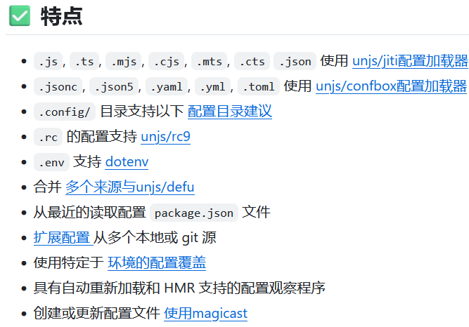

首页
开发最佳实践
仅仅是我认为的
主编程语言 ：
typescript
ts 编程最佳工具、最佳实践
打包工具：
rslib
，
tsup
运行时：tsx node (在node的基础上直接运行ts程序：
jiti
，tsx)
llrt
bun，deno
混合 (CommonJS/ESM) TypeScript 节点包生成器。 写 仅在 ESM 和 CommonJS 中以简单模式工作的模块。https://github.com/isaacs/tshy
type &
jsonSchema
：
arktype(魔法一般强大的ts类型验证)
https://github.com/sinclairzx81/typebox#readme
数据库
：
kysely(ts 类型友好的 sql 生成器)
prisma
(nice的 orm 库) https://github.com/drizzle-team/drizzle-orm
编辑器：
vscode
ci/cd ：
github actions
,
act
我惯用的命令:
bash
act\ # 不重新拉取镜像（需要之前拉取过） --pull=false\ # 将当前工作目录绑定到容器内，而非复制到容器内（actions脚本可以直接操作外界文件） -b\ # 配置网络代理 --env HTTP_PROXY=http://127.0.0.1:7777 --env HTTPS_PROXY=http://127.0.0.1:7777
输入法 ：
rime
/ 微软输入法
添加小鹤双拼方案,cmd 执行下面这条命令
powertoys 用于窗口置顶（例如操作浏览器和编码无需切换窗口（置顶vscode）），还有许多的实用功能
html
所有不安全引用应当采用
Subresource_Integrity 子资源完整性校验
工具收藏
数据库: pocketbase 低代码快速开发
inngest
可扩展、低延迟、事件驱动的持久执行平台。 支持部署到无服务器、服务器或边缘的功能。
智能配置加载器
ts文件作为配置
